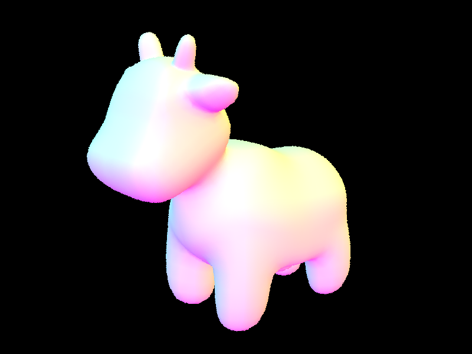
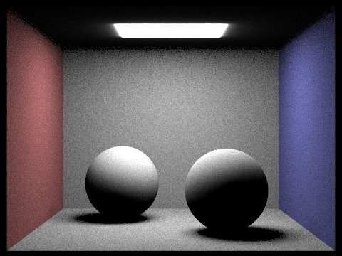
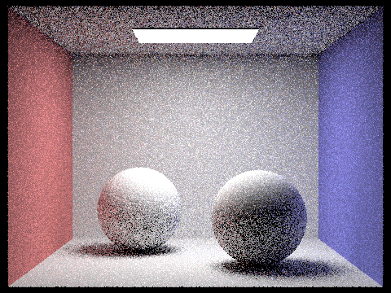
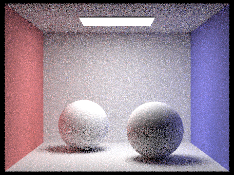

Assignment 3: PathTracer
Dustin Luong, Jasper Chen
Team Name: p3-1-pathtracer-sp22-tacobell
Overview
In this project, we considered various aspects of ray tracing, beginning from generating rays from light sources, then optimizing them and tracking several bounces of light. In task 1 of this
project, we implemented the core functions of ray tracing, such as filling out data, time, and distances when rays intersect with primitive data structures. In part 2 of this project, we
implemented optimizations to partition our primitive data types so that we would not need to check intersections between rays and every primitive data type in our scene, but would only check
the primitives that the ray could possibly intersect based on our bounding box.
We then continued and simulated light coming from a light source, bouncing off a surface and reaching our viewpoint, and light bouncing multiple times before reaching our viewpoint. We implemented
several sampling methods, including hemisphere and importance sampling for direct illumination and recursively added multiple bounces to simulate more than once bounce for a particular ray of light.
Finally, in task 5, we implemented adaptive sampling, which allowed us to terminate sampling early if there is not much variance in the data types, reducing the noise in the image as well.
In this project, we encountered a bit of issue determining formulas and constants for light travelling, and that oftentimes led to the image being too bright or too dim. We also had incorrect logic
for determining intersection points, so we would sometimes miss objects in the scene and had to step back and establish a consistent way to determine which objects would be intersected and which of those
objects would change variables within our scene.
Part 1: Ray Generation and Intersection
 CBempty after Ray-Triangle Intersection
CBempty after Ray-Triangle Intersection
|
 CBSpheres after Ray-Sphere Intersection.
CBSpheres after Ray-Sphere Intersection.
|
Given a position (x, y) in world space, we wished to convert that into a coordinate with respect to "camera" coordinates. We first converted the (x, y) values into
coordinates in camera space, then generated a vector going from our camera's position toward the point in camera space. Next, we instantiated a ray going from our camera
toward the point, with minimum and maximum values at nClip and fClip respectively.
When implementing our triangle has_intersection method, we obtained our t, b1, and b2 values from the moller_trumbore method and deduce b3 from 1-b1-b2. We have to
enforce that when our ray intersects our triangle, b1, b2, and b3 are all between 0 and 1 and that the time our triangle intersects the ray is in between the min_t and
max_t values, returning false if any of these restrictions do not hold. Then, in our intersects function, if our triangle does intersect the ray, we update the
time, normal, primitive, and bsdf values of our intersection variable and updating our maximum time of the ray to be the intersection time given by moller_trumbore.
Part 2: Bounding Volume Hierarchy
|
A large file, maxplanck.dae, with BVH.
|
A large file, CBlucy.dae, with BVH.
|
|

cow.dae, with and without BVH.
|
beetle.dae, with and without BVH.
|
When implementing our bounding box hierarchy construction algorithm, for all nodes, we started by expanding our bounding box to fit all of our
primitives and determining the number of primitives in this box. If the number of primitives in the node was less than or equal to our maximum leaf size,
we know that the node is a leaf node and can set the start and end variables of that node to the list of primitives that we have. However, if the number of
primitives is larger than our maximum leaf size, we know that the node is an interior node and need to recursively divide the node.
In our algorithm, we choose to split along the longest axis (the one with the greatest distance between maximum and minimum values). We chose the split based
on the mean, with all primitives with corresponding value on that axis less than the mean going to our left node and all primitives with corresponding value greater
than the mean going into our right node. We then recursively call our construction algorithm again on both our left and right nodes.
We encountered three major issues when implementing the functions for this part of the project. In the construct_bvh function, we encountered difficulty with pointers
and segfaults when trying to separate the iterator into two separate ones to pass into our left and right nodes. Our original implementation iterated through the all of
the primitives and manually sorted them into two lists, but we addressed that issue by using the partition function. Our second issue came from an error updating our ray
intersection times - we had incorrectly stored the min and max intersection times in the wrong variables, leading to our function always returning false and our shading always
having a black screen. After resolving those two issues, our algorithm rendered the image properly, but without improving the time required to shade. The cause of this issue
was that we still checked every primitive even though we divided our nodes properly.
When testing the performance benefits of using BVH, we shaded both cow.dae and beetle.dae with and without BVH. When shading without BVH, we used the starter code, which treated
the entire node as a leaf node and checking intersections of rays with each primitive in the node. With the starter code, cow.dae, which had 5856 primitive elements, took 114.24 seconds
to complete shading and beetle.dae, which has 7558 primitive elements, took 146.09 seconds to complete shading. Then, with the ray tracing acceleration structures we implemented in
intersect, cow.dae took 0.9656 seconds to shade and beetle.dae took 0.7363 seconds to render on a local computer.
Part 3: Direct Illumination
|
CBbunny.dae with hemisphere sampling.
|
CBbunny.dae with importance sampling.
|
|

CBspheres.dae with hemisphere sampling.
|
CBspheres.dae with importance sampling.
|
In our uniform hemisphere sampling algorithm, we fixed a point of interest and a hemisphere around that point, then sampled uniformly across that hemisphere.
For each point that we sample, we create a ray going from our point to the point on the hemisphere, and if the ray intersects the point on the hemisphere, we know that
conversely, light must also go from the point on the hemisphere onto our point. When that occurs, we obtain the radiance from the light source, consider the angle that
it travels to get to our light source, and consider the contribution the light source makes in illuminating our point. We repeat this for num_sample iterations and return
the total sum of contributions, scaled by 2 * PI / num_samples, which is the normalization term in Monte Carlo estimation.
When we sampled with importance sampling, our algorithm for determining the amount of light illuminating an object was similar to that for uniform hemisphere sampling,
but we choose to only sample light sources instead of choosing random points on the hemisphere. For each light source, if a ray goes from our point to the light source without
intersecting other objects along the way, we know that the light source must contribute some amount of light and calculate the radiance and angle it contributes in illuminating
our point. We sample each light source proportionally to the area of that light source and iterate across all light sources.
Both hemisphere and importance sampling considers the radiance emitted by a point in the same way, by taking the emission (if the light ray intersects with our camera), the angle
that it takes to arrive at our camera point and summing all of the contributions in the way. However, hemisphere sampling samples uniformly around the point, while importance
sampling considers only points that emit light that connects with our point. In reality, hemisphere sampling is closer to reality, since there exists points in the world that do not emit
light that connects with the point, which is represented by the noise in both of the images rendered through hemisphere sampling. Because of this, we observe that the light on the roof
has subtle rays going to the side, which is what we expect in the real world. In contrast, importance sampling only considers light that comes from a light source, reducing all the noise
that might be caused by darker points. Because of this, we can see the image more clearly, without much noise affecting the perception of the image. However, the image has much sharper edges,
as we do not observe the light rays moving away from the light at the top. Furthermore, the shadows below the objects are longer and blend with the floor more smoothly than the
shadows generated by importance sampling, which are shorter and have an abrupt blending with the floor.
|
Importance sampling, 1 light ray.
|
Importance sampling, 4 light rays.
|
|
Importance sampling, 16 light rays.
|
Importance sampling, 64 light rays.
|
In the last four images, we shade CBbunny.dae with importance sampling and 1 sample per pixel, but change the number of light rays in each image. From the images, we can see that the
more light rays present in the image, the less noise there is in the image. With 1 and 4 light rays in the image, the images generated with importance sampling appeared closer to the bunny
shaded with hemisphere sampling, but as we increase the number of light rays in the image, the amount of noise decreases and we can see more blending between the shadows and the surroudings.
The first image with only 1 light ray had no indication of blending, with the shadow being essentially either gray or black, and the appearance of the shadow was shown with a larger distance between points.
Part 4: Global Illumination
|
CBspheres_lambertian.dae with global illumination.
|
CBbunny.dae with global illumination.
|
|
dragon.dae with global illumination.
|
blob.dae with global illumination.
|
|
CBbunny.dae with direct illumination only.
|
Cbbunny.dae with indirect illumination only.
|
In our global illumination algorithm, we first sampled our point to obtain a direction and the probability of obtaining that direction. After sampling a direction and probability, we first checked
if the ray generated had already been recursively called by a previous call to at_least_once_bounce radiance. If it had not already been called, we obtain the next ray generated by the point our first ray
intersected with and calculate the emission of the hit point to our original point. Similarly to part 3, we consider the angle at which the emission comes into contact with our original point, scaling by that
angle and the probability that we obtained our angle. However, if our ray had already been called, we apply Russian Roulette sampling to consider whether or not we will continue recursively calling the
at_least_once_bounce function. Given that our continuation probability was 0.65, we applied the same algorithm as mentioned above with probability 0.65 on our new ray and returned the one_bounce lighting
with probability 0.35. In both of these cases, if the ray depth was 1 or below, we would not recursively call this function and instead returned the one_bounce radiance.
The last two images show CBbunny.dae rendered with only direct lighting (zero and one bounce radiance) and with only indirect lighting (anything other than zero and one bounce radiance). Our image
with only direct illumination appears to be the same as task 3 with importance sampling. With indirect illumination only, we can see a dim view of the entire room with details of objects highlighted as
well. However, compared to direct lighting only, the light on the ceiling is replaced with a black plane and the rest of the roof is also lit up. Intuitively, this makes sense since the light emits zero bounce
radiance only and is emitted, and one bounce of light will not get back to the roof, since it is on the same plane as the light.
|
CBbunny.dae with max_ray_depth 0.
|
CBbunny.dae with max_ray_depth 1.
|
|
CBbunny.dae with max_ray_depth 2.
|
CBbunny.dae with max_ray_depth 3.
|
|
CBbunny.dae with max_ray_depth 100.
|
The five images above show CBbunny.dae rendered with 1024 samples per pixel but with various maximum ray depths. In the case where the maximum ray depth is 0 or 1, there is no
indirect illumination occuring. The only light in the scene would be the light emitted by the light source only or light caused by direct illumuination respectively. But when the
maximum ray depth is greater than 2, there will be at least 1 iteration of indirect lighting. When there is indirect lighting, we can see more of the entire scene (such as the color
of the roof), and as the ray depth increases, the scene appears to be brighter. However, a maximum ray depth of 100 is not much brighter than a maximum ray depth of 3, because we continue bouncing
with Russian Roulette sampling. Even though the maximum depth is greater, the probability that we continue to sample points decreases exponentially, so we do not reach that maximum case often,
if at all.
|
CBspheres.dae with 1 sample per pixel.
|

CBspheres.dae with 2 samples per pixel.
|
|
CBspheres.dae with 4 samples per pixel.
|

CBspheres.dae with 8 samples per pixel.
|
|
CBspheres.dae with 16 samples per pixel.
|
CBspheres.dae with 32 samples per pixel.
|
|
CBspheres.dae with 64 samples per pixel.
|
CBspheres.dae with 1024 samples per pixel.
|
In these last 8 images, we rendered CBspheres_lambertian.dae with 4 light rays, but different numbers of samples per pixel. With 1 sample per pixel, the image is very noisy
and the blending between the shadows and the surfaces are present, but not very clear. As the number of samples per pixel increases, the less noise there is, with 1024 samples
per pixel appearing very clear and there does not appear to be any noise. This is in contrast to fixing the samples per pixel, but editing the maximum ray depth as in the images with
the bunny. In those cases, the effect of increasing the maximum ray depth appears to decrease quickly, but the noise continues to decrease as we increase the samples per pixel.
Part 5: Adaptive Sampling
|
CBbunny.dae rendered with adaptive sampling.
|
Heatmap for CBbunny.dae, adaptive sampling.
|
In our implementation of adaptive sampling, we are given samples_per_batch and max_tolerance as parameters to indicate how often to check our terminating condition and how much we are willing to
tolerate before terminating our iteration early. While we are still in the loop and on sample i, with i < num_samples, we continue to add to our total radiance as well as incrementing s1 and s2
variables with our illuminance and illuminance squared respectively. Then, for every samples_per_batch iterations, we check if the sample has converged to some average value, and if it has converged,
we terminate our loop early. Our radiance is no longer the sum of ns_aa samples, but the sum of the radiances of the points we sampled before terminating.
The images above are CBbunny.dae rendered with global illumination and adaptive sampling. Compared to tasks 3 and 4, there is much less noise. The heatmap for CBunny.dae indicates the areas that are sampled
more often, being the bottom of the bunny and the region between the roof and the walls. Intuitively, this makes sense since the image is changing quickly over those regions, and the floor and walls are sampled
less frequently since there is less variance across those regions.
Responsibilities for the Project
In this project, we worked as a team to develop each task. We would often code at the same time, checking with each other for questions that we had, clarifying what certain functions did and the implementation of
pseudocode in lecture. When we discovered bugs in the project, we would also both attack the bug at the same time, letting each other know tests we were doing, discussing possible issues and dismissing other issues as
a non-cause for the bug.
Website Link